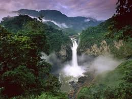
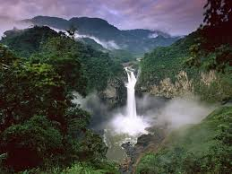
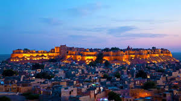
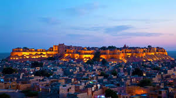

Amazing Bhimbetka
Virtual Tour
Cave paintings dating back to approximately 30,000 years. Rock shelters that were home to humans, millennia ago. And a rich flora and fauna surrounding these, indeed, make Bhimbetka a gift to us from our earliest ancestors. The Rock Shelters of Bhimbetka has the oldest-known rock art in India, as well as is one of the largest prehistoric complexes to be seen.
An archaeological treasure, Bhimbetka has around 243 rock shelters and have earned the honour of UNESCO World Heritage Site. The paintings found in the rock shelters here have a striking resemblance to the ones discovered in Kakadu National Park in Australia; to the cave paintings of Bushmen in Kalahari Desert and Upper Palaeolithic Lascaux cave paintings in France.
A walkthrough these ancient naturally carved rocks surrounded by dense forests of Bhimbetka will bring alive child-like wonder in you. About 47 min drive from Bhimbetka will also take you on a tour to Bhojpur. Pay a visit to the enigmatic temple dedicated to Lord Shiva. It houses around 7.5 feet high shivlingam in its sanctum. It is believed that the construction of the temple was commenced during the reign of Paramara King Bhoja.
The Red Fort (Lal Qila) is a monument built in 1648 that rises 33 meters (108 ft) above Old Delhi.[1] It was built by the Mughal Emperor Shah Jahan. The fort is located in the centre of Delhi, India.[2] It is made of red stone and marble. It was built on the right bank of the Yamuna River.
The Red Fort was originally referred to as "Qila-i-Mubarak" (the blessed fort), because it was the residence of the royal family. The layout of the Red Fort was organised to keep and integrate this site with the Salimgarh Fort. The planning and aesthetics of the Red Fort represent the high point in Mughal creativity which happened during the reign of Emperor Shah Jahan. This Fort has had many additions after its construction by Emperor Shah Jahan. It is a World Heritage Site.[2] it is made out of red sandstone.
The Taj Mahal is an Islamic religious building, mosque and tomb in India. It was built in the 17th century by Mughal Emperor Shah Jahan as a mausoleum in memory of his wife, Mumtaz Mahal.[3]
The building is in the city of Agra, Uttar Pradesh. It is widely thought as one of the most beautiful buildings in the world. It is one of India's biggest tourist attractions.
The Taj Mahal is listed as a UNESCO World Heritage Site,
together with the Agra Fort, 2.5 kilometers away. It was listed as one of the 7 Wonders of the World in 2007. It is on the south bank of the Yamuna river in Agra.
The building was originally white. Because of pollution, it is turning yellow. Sulphur dioxide in the atmosphere reacts with water molecules and becomes sulphuric acid, which slowly destroys the outer layer of the building.
The building also appears to be pink in the morning, yellow-ish in the evening, and gold at night.
The Amazon rainforest is the largest tropical rainforest in the world.
The forest is in a basin drained mainly by the Amazon River, with 1,100 tributaries. It is a moist broadleaf forest which covers 7,000,000 square kilometres (2,700,000 sq mi). Of this, 5,500,000 square kilometres (2,100,000 sq mi) are covered by the rainforest.
This region includes territory from nine nations. Most of the forest is in Brazil, with 60% of the rainforest,
followed by Peru with 13%, and Colombia with 10%. Venezuela, Ecuador, Bolivia, Guyana,
Suriname and French Guiana have just a small amount of rainforest.[1]
Jaisalmer, nicknamed "The Golden City", is a town in the Indian state of Rajasthan. The town is located on a ridge of yellowish sandstone which contains a palace and temples. It lies in the middle of the Thar Desert and has a population of about 78,000. It is the capital of Jaisalmer District. The city is named after Rawal Jaisal.[1]
Gallery
Jaisalmer Fort
Jaisalmer Fort
View from Jaisalmer Fort
View from Jaisalmer Fort
Old city
Old city
Trading in old city
Trading in old city
Jaisalmer Fort
Jaisalmer Fort
Fort palace
Fort palace
Patwon Ki haveli
Patwon Ki haveli
Lake Gadsisar
Lake Gadsisar
Notable people
Queen Harish, folk dancer
Malika Jahan, Jaisalmer princess, and wife of Mughal emperor Jahangir
The Lotus Temple is a Baháʼí House of Worship in Kalkaji, New Delhi, Delhi, India. It was completed in December 1986. Notable for its lotus-like shape, it has become a prominent attraction in the city. Like all Bahá’í Houses of Worship, the Lotus Temple is open to all people, regardless of religion or any other qualification. The building is composed of 27 free-standing marble-clad "petals" arranged in clusters of three to form nine sides,[1] with nine doors opening onto a central hall with a height of slightly over 34 metres[1] and a capacity of 1,300 people.[2] The Lotus Temple has won numerous architectural awards[3][4] and has been featured in many newspaper and magazine articles.[5]
The Taj-ul-Masajid romanized: Tāj-ul-Masājid, lit. 'Crown of Mosques'), also known as the Tāj-ul-Masjid is a Sunni mosque, affiliated with Tablighi Jamaat, part of the Deobandi movement, located in Bhopal, in the state of Madhya Pradesh, India.[1] With capacity for c. 175,000 worshippers, it is the largest mosque in India and, as of 2014, was the ninth largest mosque in the world.[2][3]
 Tajmahal
Tajmahal
 


 
